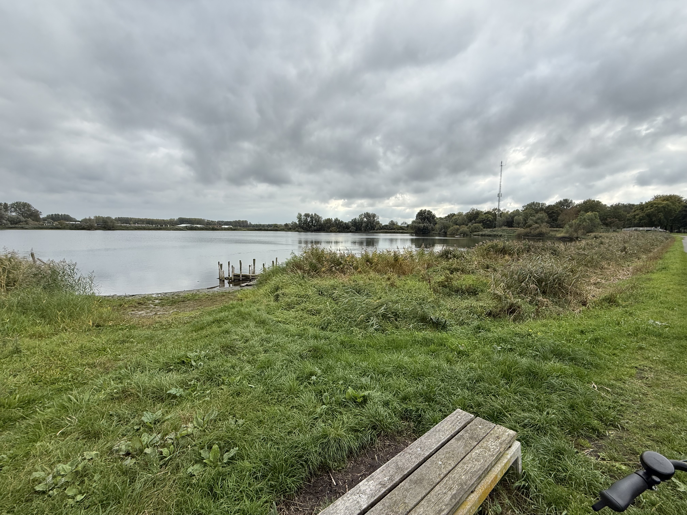

Safe & Family-Friendly Cycling
Haarlem is built for cyclists — explore paths where comfort and safety come first.

City Safety Route
Ride through Haarlem’s well-marked city paths — ideal for beginners and commuters.
| Distance | 8 km |
|---|---|
| Duration | 30 minutes |
| Difficulty | Easy |
| Starting Point | Haarlem Central Station |

Family Park Route
A calm, green ride around Haarlemmerhout Park — completely safe for children and families.
| Distance | 6 km |
|---|---|
| Duration | 25 minutes |
| Difficulty | Very Easy |
| Starting Point | Haarlemmerhout Entrance |

Countryside Comfort Loop
Enjoy peaceful roads and separated cycling lanes through Haarlem's outskirts.
| Distance | 15 km |
|---|---|
| Duration | 50 minutes |
| Difficulty | Moderate |
| Starting Point | Haarlem West |

Route Overview
Use our interactive map on the contact page to plan your safest ride through Haarlem.